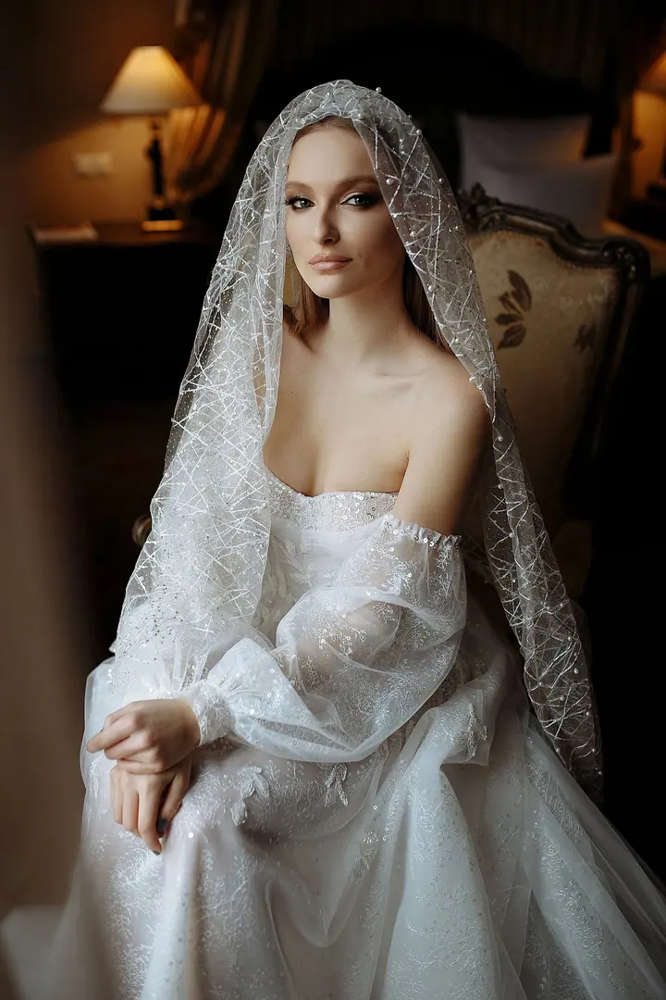
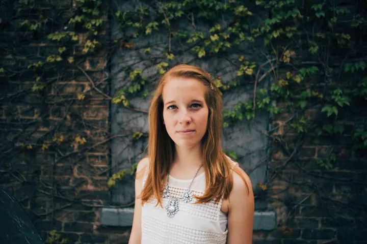

Svatební fotografie
Svatební den fotím v klasickém filmovém duchu se skutečnými emocemi a zajímavým světlem s nádechem módy. Zajímají mě pohledy, doteky, úsměvy a chvíle, které se nebudou opakovat.



Jmenuji se Vasilina Svitelska a jsem svatební fotografka. Mám ráda klasický filmový obraz, skutečné emoce a zajímavé světlo s nádechem módy. Fotím v Praze i kdekoliv jinde ve světě, kam mě pozvete.
Více o mně
„Zachycení skutečných okamžiků pro šťastné lidi je to, o čem to celé je.“
— Vasilina Svitelska
Svatební den fotím v klasickém filmovém duchu se skutečnými emocemi a zajímavým světlem s nádechem módy. Zajímají mě pohledy, doteky, úsměvy a chvíle, které se nebudou opakovat.
Společné focení pro dva, třeba svatební procházka v ulicích Budapešti. Ráda vyrážím i na nečekané cesty za fotkou.
Portrétní focení s důrazem na světlo, detail a jemný módní nádech. Když máte nápad, třeba i ten nejbláznivější, ráda ho s vámi zrealizuji.
Fotografovat jsem začala v roce 2015 a od té doby je fotografie to hlavní v mém životě. Svatební fotografii miluji, protože je plná skutečných emocí a upřímných okamžiků.
Nejde mi jen o krásné snímky. Chci zachytit váš vlastní příběh: pohledy, doteky, úsměvy a chvíle, které se už nezopakují. Fotím tak, abyste se ke svému svatebnímu dni mohli vracet znovu a znovu a pokaždé si připomněli tu radost i dojetí.
Nedržím se zastaralých postupů. Záleží mi na svobodě, světle a kvalitě v každém detailu. Jsem otevřená novým nápadům i nečekaným cestám, a tak s vámi ráda pojedu kamkoliv, kde je láska a dobré světlo.

Pošlete mi vaše jména, datum svatby a představu o rozpočtu. Nejrychleji se mi ozvete e-mailem.
Probereme, jak si svůj den představujete, kde se bude konat a jaká místa a světlo by se k vám hodily.
Jsem u toho s vámi, nenápadně a v klidu. Vy si užíváte den, já hlídám světlo, detaily a skutečné emoce.
Každý snímek pečlivě upravím do nadčasové, filmové podoby, ke které se budete rádi vracet.
Svatební focení začíná na 15 000 Kč. Konečná cena záleží na rozsahu dne a místě, proto mi napište a připravím vám nabídku na míru.
Ano. Jako svatební fotografka pracuji kdekoliv na světě a za dobrou fotkou ráda vyrazím i na nečekané cesty.
Nemusíte. Dávám přednost skutečným emocím před strojeným pózováním. Pomůžu vám se uvolnit a zbytek přijde sám.
Kromě svateb fotím love story, svatební procházky a portréty. Pokud máte vlastní nápad na focení, ráda si ho poslechnu.